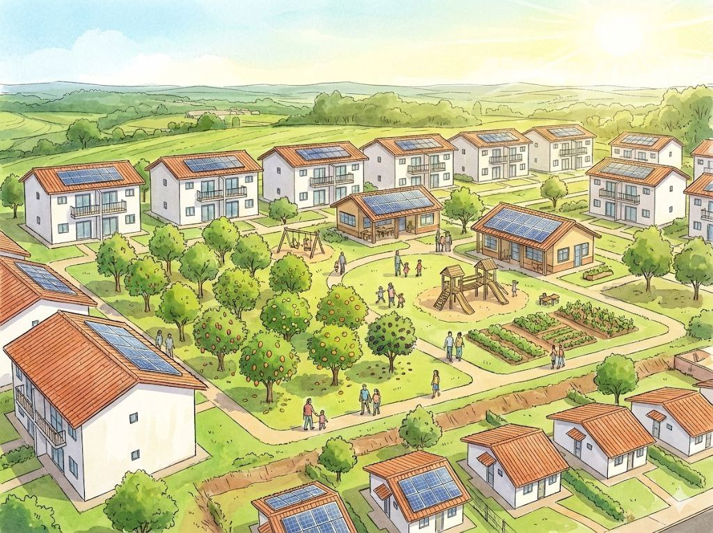

Sobre a IMOBX
Por que a IMOBX existe?
Construir um lar é uma busca existencial de todo ser humano, onde quer que esteja.
Em 2022, o déficit habitacional do Brasil era de cerca de 6 milhões de moradias. Mais da metade (cerca de 3,24 milhões) eram famílias com renda de até três salários mínimos que gastam mais de 30% da renda com aluguel. Os aluguéis subiram 9,13% nos 12 meses até setembro de 2026, o dobro da inflação oficial de 4,58%. O Censo 2022 contou cerca de 16,4 milhões de pessoas morando em favelas e comunidades urbanas: um em cada doze brasileiros.
Quem começou a IMOBX, e por quê?
Minha infância me ensinou cedo o valor de cada centavo e de um teto seguro. Meu pai foi ausente, e minha mãe sustentava a casa trabalhando de 70 a 80 horas por semana para criar três filhos. Nunca desisti de um sonho que carrego desde a faculdade: construir boas moradias, de padrão modesto ou acessível, para que as famílias mais pobres possam de novo realizar o sonho da casa própria. Porque todo brasileiro sonha com isso.
Ninguém gosta de pagar aluguel, de criar raízes num lugar e um dia ter que sair porque a casa não é sua. Quando a vida aperta, a primeira coisa que queremos é entrar na nossa caverna e nos proteger. A pergunta que não sai da minha cabeça é simples: por que ter a própria caverna não é um direito de todos? A IMOBX é a minha resposta a essa pergunta.
Cresci como o mais velho de três filhos. Alguns anos depois de eu sair de casa, o casamento dos meus pais acabou. Foi a primeira vez que senti que tinha perdido o meu lar. Ainda sinto falta dessa sensação de estar em casa. É uma busca que continua.
Desde 2005, procuro formas para que as comunidades compartilhem o que pertence a todos. A proposta da IMOBX leva essa ideia de compartilhar à moradia.
O que queremos construir?
Queremos bairros de transição social rumo a um futuro resiliente, onde os vizinhos voltam a se conhecer e as crianças brincam onde os pais podem vê-las. Quem mora ali decide junto como o lugar funciona. O nosso lucro real é social. A nossa riqueza é um mundo onde as pessoas são livres, e um bairro sem estresse vale mais do que ficar milionário.

Como funcionaria?
Nosso plano é o aluguel com compra. Uma família se mudaria sem dar entrada, e parte de cada pagamento mensal iria para a compra da casa. A construtora do Rafael construiria a um custo conhecido, conferido de forma independente. O que sobrar iria para a próxima casa, para a próxima família. Planejamos começar com uma família, muito provavelmente no apartamento do Rafael em Guadalupe, e depois construir alguns apartamentos de cada vez.
Outros grupos de moradia já administram suas casas juntos, e aprendemos com eles. A FUCVAM, federação uruguaia de cooperativas de ajuda mútua fundada em 1970, faz as famílias construírem juntas, enquanto a cooperativa fica com a escritura. O Mietshäuser Syndikat, na Alemanha, une casas de aluguel administradas pelos próprios moradores. Nos Estados Unidos, os fundos comunitários de terra mantêm a terra em comum e dão a cada família os seus direitos num contrato longo e assinado. Pegamos o que funciona e adaptamos ao Rio, onde cada família seria dona da própria casa.
Onde estamos agora?
A IMOBX está em preparação, e a sua cooperativa ainda vai ser fundada. Buscamos a primeira família, a primeira casa e as pessoas que vão fundar a cooperativa com a gente. Se você é uma família procurando moradia, tem um terreno ou uma casa, constrói, financia ou é um vizinho que quer que isso exista, queremos conhecer você.